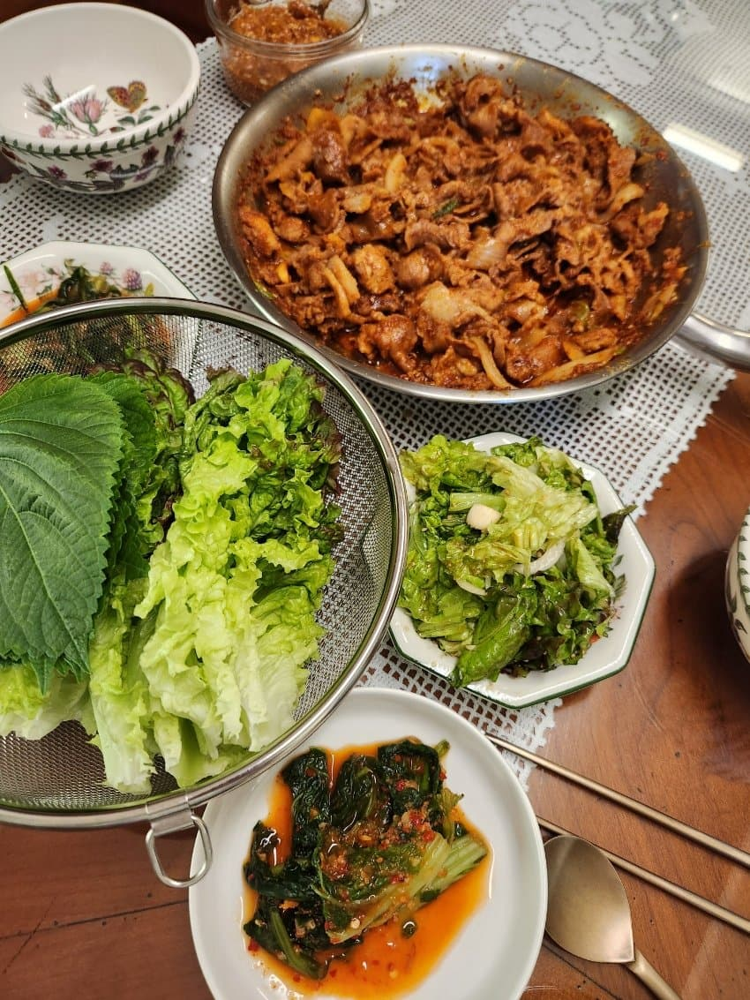
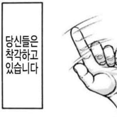
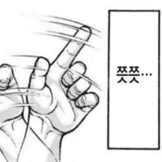

맛있게 먹어!

맛있게 먹어!
아냐 요리실력 왤케 들죽날죽하냐 ㅋ
애들 요리가 다 그렇지
엘레강스!
콩밥으로 만든 유부초밥 어디감
스텔라를 주마
소주가 없잖아...
이런 글이 꽤 많이 올라오던데 무슨 재미가 있는거임?
내가 좋아하는 캐릭터가 밥상을 차려준다는 상상을 하는건가? 무슨 캐릭터에 밈이 있다기엔 캐릭터도 계속 바뀌는 것 같고
엘리강스!
여기까지 템플릿임, 원래 이쁘고 사랑스러운 캐릭터가 개좆같은 콩밥 밥상 차려줘서 씨발련아 하게 되는 템플릿을 한번 비튼거임 비슷한걸로는 아들~엄마가 OO사왔다 밈이 있음
아 아들 치킨사왔다 뭐 이런건 봤는데 그걸 캐릭터에다가 또 입힌거구만 ㅇㅋ
이런걸 설명까지 해야되는건가
모르니까 물어봤지?


곱다
바로 토니트 3개
아냐야 왜 제육볶음에서 피넛버터맛이 나니???
의외로 오히려좋을지도
요리천재니?